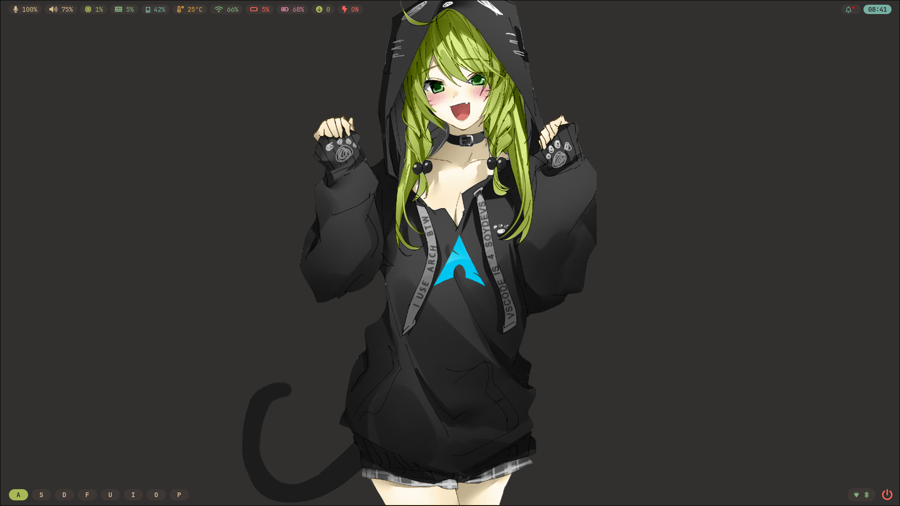

I'm a software developer that builds CLI tools and web services using Go and Python, and likes Free and Open-Source Software (FOSS), Linux and self-hosting.
I have a YouTube channel where I talk about shell scripts, home labs, tools and apps that I build, Neovim and Arch Linux (I use Arch, btw)!
You can support me via a donation or commission work using
Ko-Fi. ❤️
Check out a screenshot of my Linux rice: 